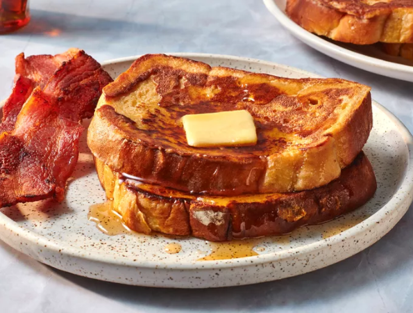

French Toast
French toast has nothing to do with France it's just toast with eggs in it
Ingredients
- 1/4 cup of all-purpose flour
- a cup of milk
- three eggs
- a tablespoon of sugar
- a teaspoon of vanilla extract
- 1/2 a teaspoon of ground cinnamon
- a pinch of salt
- a loaf of bread
Instructions
- Gather all ingredients
- Measure flour into a large mixing bowl. Slowly whisk in milk. Whisk in eggs, sugar, vanilla extract, cinnamon, and salt until smooth.
- Heat a lightly oiled griddle or frying pan over medium heat. Meanwhile, soak bread slices in milk mixture until saturated.
- Working in batches, cook bread on the preheated griddle or pan until golden brown on each side.
- Serve hot and enjoy

Go Back